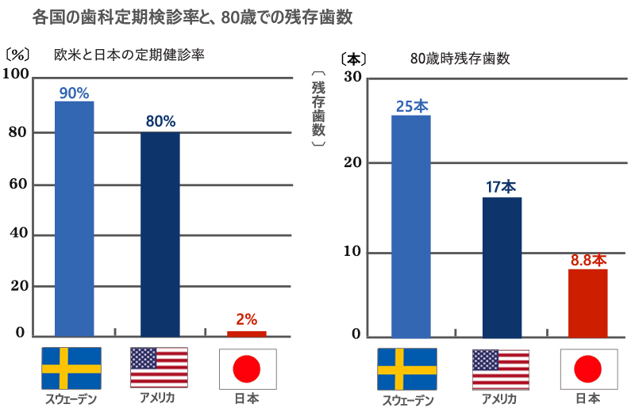
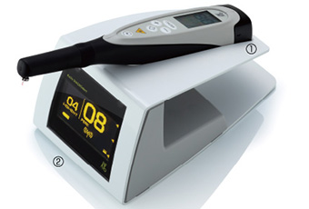
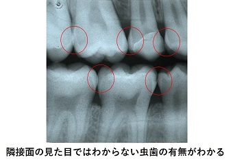
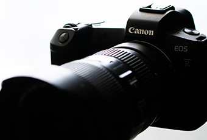
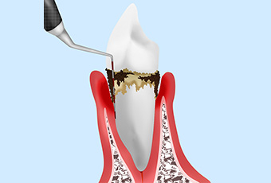
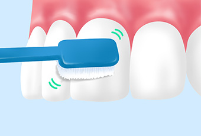
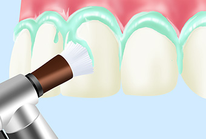
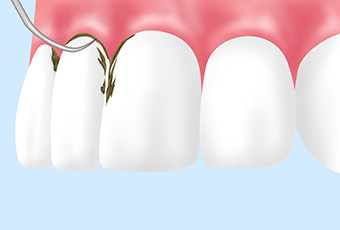
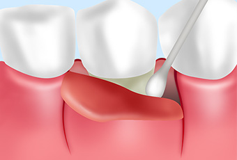

- ホーム
- 予防処置
天王寺まつい総合歯科の予防処置
いつまでもご自身の歯で噛んでいただくために
歯科治療は日々進歩し、歯や歯茎の骨を失ってもいろいろな方法で補うことが可能となっています。けれども、どんなに優れた装置も健康な天然の歯には敵いません。それだけに当院では、患者さまが70歳になっても80歳になっても、ご自身の歯で噛んでいただけるよう、予防処置の重要性をお伝えしております。
歯は年をとれば失うもの、ではない？
私たちの体は、年を重ねるごとに、いろいろな変化が起こります。視力が低下したり、聴力が衰えたりと、避けることのできない変化もありますが、歯に関しては当てはまりません。
下のグラフを見ていただけるとわかりますが、適切な予防処置を受けるかどうかで、80歳になった時の残存歯数に、ここまでの開きが生じるのです。つまり、「歯は年をとれば失うもの」ではなく、定期的な検診やメンテナンスを受けることで、若い頃に近い状態を保つことも難しくないのです。
各国の歯科定期検診率と80歳での残存歯数

〜歯医者は「痛くなる前に行くもの」〜
なにもせずに年を重ねていくと、失われる歯の数も増えていきます。そんな自然の流れに逆らって、80歳まで25本の歯を残すことは、至難の業のように思えますが、実際はそうではありません。歯医者さんは「痛くなってから行く」のではなく、「痛くなる前に行く」もの、という考え方にシフトすることで、口腔環境は大きく変わります。
当院の予防処置の体制
「定期的に歯科検診を受けているのに急に致命的な虫歯が見つかった・・・」
「見た目だけで大丈夫と言われていたが、急に何本も虫歯ができた・・・」
こんなこと聞いたことありませんか？
近年、真面目に定期検診を受けている方でのこのようなトラブルも問題となってきているようです。当院では、虫歯の見逃しがないように、ドクターと歯科衛生士のダブルチェックで診療にあたっております。具体的な診査方法は以下の通りです。
視診
まず、しっかりと清掃をした後、お口の中を直接目で見て診査します。知識や経験をもとに、機械や画像では見つけることのできない異常を見つけ出します。
ダイアグノデント

ダイアグノデントは、初期の虫歯を検出する際に有効な装置です。視診では見逃してしまう、肉眼では確認できないような虫歯を検出します。
バイトウィング（咬翼法）

視診や通常のエックス線撮影法では検出が難しい、隣接面（歯と歯の間）の虫歯を検出するのにも有効な方法です。左右合わせて2枚撮るだけで上下左右全ての奥歯の隠れ虫歯を診れることができ、また歯槽骨の吸収の有無も併せて診ることができます。 歯の隣接面は、虫歯の好発部位であるため、バイトウィング法でしっかりと検査する必要があります。
※根の先はうつらない為 根の先の病気の診断には不向です(他の撮影法の選択が必要)
口腔内写真

ケースによっては口腔内写真を経過を追って撮影し変化をチェックする事もあります。
当院の予防処置の内容
虫歯を予防する上で重要なのは、プロフェッショナルケアとセルフケアです。プロフェッショナルケアは、歯科医院で受ける口腔ケアで、ドクターや歯科衛生士が行います。セルフケアは、患者さまがご自宅で行う口腔ケアです。ここでは、当院のプロフェッショナルケアについてご紹介します。
- 口腔内診査
-

お口の中の状態を拝見させていただきます。虫歯の有無だけでなく、歯茎の状態なども検査して、最適な予防処置法をご提案いたします。
- TBI(ブラッシング指導)
-

虫歯や歯周病の原因は、磨き残しです。ブラッシング法が不適切だと、歯面に歯垢や歯石が沈着し、細菌繁殖の温床となるからです。そこで一人ひとりに合ったブラッシング法及び清掃道具等を指導させていただきます。
- PMTC(歯のクリーニング)
-

PMTC（プロフェッショナル・メカニカル・ティース・クリーニング）とは、専門家による歯のクリーニングです。通常のブラッシングでは落とすことができない汚れを、専用の機器や薬剤を使って除去します。
- SC（スケーリング）・SRP
-

SC（スケーリング）・SRPとは、歯石を除去する処置です。歯石は、細菌の固まりである歯垢が石灰化されることによって形成される、文字通り石のように硬い組織です。歯ブラシによるブラッシングでは落とすことができないため、専用のスケーラーという器具を用いて除去します。歯石は、歯周病のリスクそのものですので、定期的に取り除くことが大切です。
- FOP（フラップ手術）
-

かなり歯茎の状態が悪く問題点も多い場合、壊滅的な歯周状態になってしまうのを予防するための外科的な歯周治療です。歯周再生療法を使用する場合もあります。